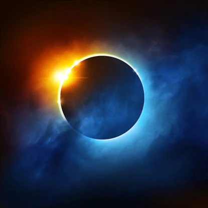
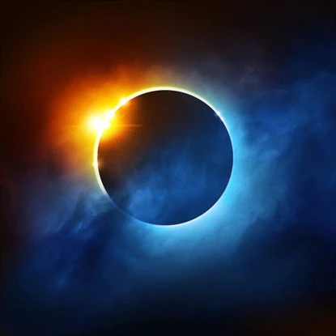

Eclipse Solar
Un eclipse es un fenómeno astronómico donde la luz de un cuerpo celeste es bloqueada por otro de menor, igual o mayor tamaño. Cuando ese bloqueo parcial o total de luz llega a un tercer cuerpo celeste, se dice que se produce un eclipse.
Para los habitantes de la Tierra se distinguen dos tipos de eclipse: de Luna y de Sol. En ambos casos, la estrella, el planeta y el satélite, deben estar perfectamente posicionados. Por ello, son eventos que no ocurren todos los días.
En el artículo “Eclipse Lunar” aprendimos que la Tierra se interpone entre la Luna y el Sol, de manera que la sombra de nuestro planeta se ve proyectada en la Luna.
Por su parte, en el eclipse de Sol, es la Luna la que se interpone entre la Tierra y el Sol, creando un trayecto sombreado en algunas regiones del planeta, donde la umbra es la parte más oscura, y la penumbra es una región más clara.
Umbra, penumbra y antumbra.
Es importante identificar los tipos de sombras que se presentan en un eclipse solar para un estudio más comprensible.
La umbra, es el momento de mayor sombra durante un eclipse. Esto es, que aunque sea de día, el entorno luce oscuro como si fuera de noche. Tal hecho ocurre porque un cuerpo es bloqueado completamente.
Le penumbra es una sombra más débil que la umbra, ya que se ubica entre esta y la luz intensa.
Por último, la antumbra es la parte más clara de una sombra que se forma a cierta distancia del objeto que proyecta la sombra. Es la parte “final” de la umbra donde la luz pasa, pero no de forma completa, por lo que puede observarse un bello eclipse anular.
Cómo se produce un eclipse solar.
El hecho de que el Sol sea 400 más ancho que la Luna, pero también esté 400 veces más lejos, crea el escenario perfecto para que un eclipse solar se lleve a cabo. Sin olvidar que para que esto funcione, la Luna debe estar en fase de novilunio, mejor conocida como “Luna nueva”, que es cuando su hemisferio iluminado por el Sol no puede ser visible desde la Tierra. Es decir, la Luna en esta fase es imperceptible al ojo humano.
Todos los cuerpos celestes giran sobre su órbita, y a su vez, también dan un recorrido alrededor del Sol. En este caso, la Tierra, la Luna y el Sol, se hallan en ubicaciones “privilegiadas” para que se suscite el fenómeno.
Tipos de Eclipse Solar.
Se distinguen tres principales tipos de eclipses solares:
Eclipse parcial
En el eclipse parcial, como su nombre lo indica, la Luna cubre de forma parcial el disco solar, de manera que una parte del Sol luce oscura, y la otra, totalmente brillante. Los observadores de estos eclipses lo hacen desde la penumbra.
Eclipse anular
En este tipo de eclipse, conocido coloquialmente como “anillo de fuego”, la Luna se posiciona en el centro del Sol. Sucede al no lograr cubrir la circunferencia total del Sol debido a una ligera diferencia en distancia (a comparación como ocurre en un eclipse total), lo que forma un anillo perfecto de intensa luz.
En términos más formales, este tipo de eclipse se presenta cuando la Luna nueva se encuentra un poco más lejos de la Tierra (apogeo), y la umbra no llega al planeta. Entonces, el espectador verá un eclipse lunar desde la antumbra.
Eclipse total
El eclipse total es el más esperado y el más fascinante para la humanidad, pues la cercanía de la Luna es suficiente para cubrir la superficie del Sol desde nuestra posición en la Tierra. Cuando la Luna nueva cubre la circunferencia solar debido a que se encuentra más próxima a la Tierra (perigeo), se puede observar la “corona” de la gran estrella, ofreciendo un espectáculo sin igual.
Eclipse híbrido
Son “raros” y constituyen solo el 4 % de los eclipses solares. Estos se presentan cuando un eclipse total se convierte en uno anular debido al alejamiento y movimiento de los cuerpos celestes. También puede ocurrir a la inversa; o sea, que inicie como un eclipse anular para terminar como eclipse total.
A continuación te dejo un video donde el divulgador Javier Santaolalla en compañía de otros divulgadores te presentaran un eclipse solar y un sinfin de conocimientos que aprenderás con un enfoque unico y divertido
 
